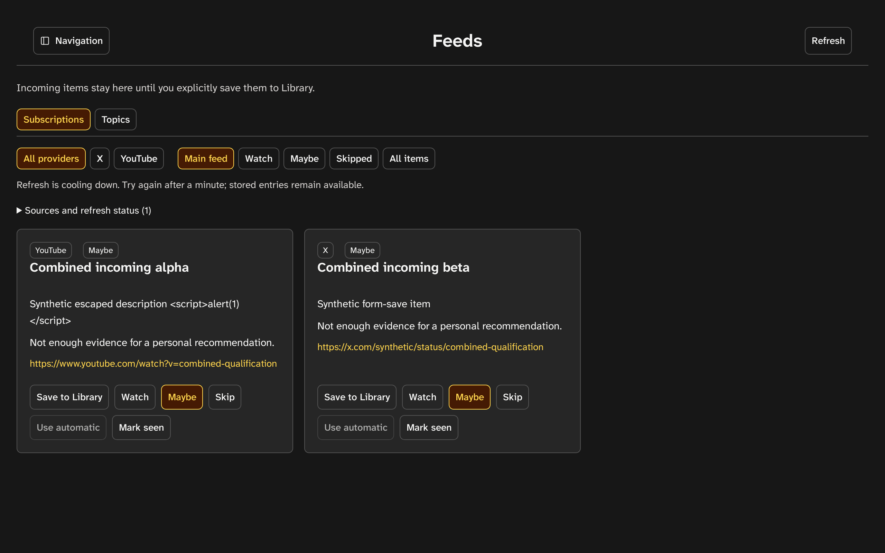

Stanza
A personal workspace for collecting resources and deciding what to read or watch next.
Bring X bookmarks and a selected YouTube playlist into one feed. Review incoming items and save what matters to your library. AI classification can help describe and group resources.

Google access
YouTube access is read-only: it retrieves playlist videos and account metadata without changing subscriptions or playlists. A one-off historical export is kept separately for private analysis; it is not an incoming feed or a recurring export.
Stanza is privately operated; public registration is unavailable. Read the privacy policy for data use and deletion.